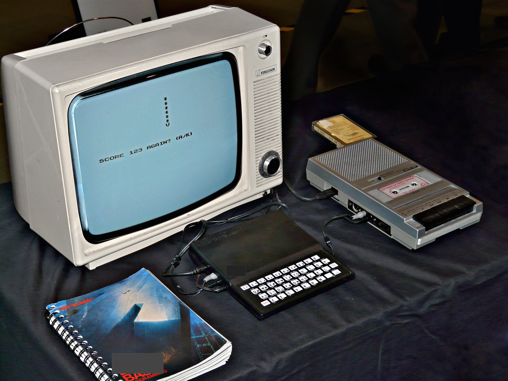

Sinclair ZX81
In March 1981, the Sinclair Research company released a small, inexpensive personal computer called the ZX81 (the black component in the picture). To keep costs down, the computer had no screen, hard (or floppy) disks, power switch, or any moving parts. To see the output, people connected the ZX81 to their television sets. To save and load data, they used audio tape cassettes. Although the ZX81 had had only 4 silicon chips and 1 kilobyte of memory, it was very popular and even won an award for its designer, Rick Dickinson.
Sinclair ZX81

https://flockler.com/thumbs/1992/sinclair_zx81_setup_photomanipped_s1500x0_q80_noupscale.jpg